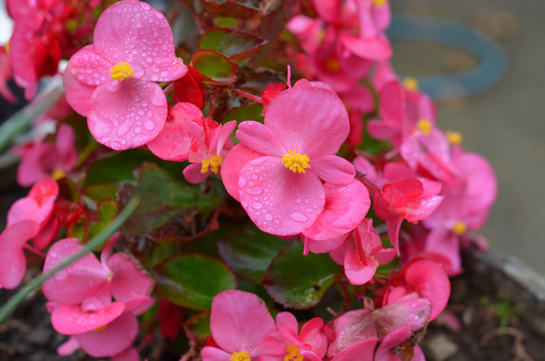

Про цветочки и не только!
Телефон: 89169996768
Почта: nimi9992@mail.ru

Всё, что вы хотели знать,
но боялись спросить,
про домашние растения!
но боялись спросить,
про домашние растения!
Про цветочки и не только!
Телефон: 89169996768
Почта: nimi9992@mail.ru
Бегония
Описание
Среди бегоний встречаются однолетние и многолетние травы, кустарники (изредка лазающие) или полукустарники с ползучим или клубневидно утолщённым корневищем, иногда с клубнем. Листья, как правило, асимметричные, часто красивой окраски (особенно у культурных видов). Цветки неправильные, однополые, однодомные. Листочки околоцветника неравные, ярко окрашенные; плод — коробочка.
Особенности
Для бегоний наиболее благоприятна температура 13—22 °C, однако необходимо поддерживать стабильный уровень влажности воздуха — не менее 60 %. Особенности сезонного содержания обусловлены природой каждого вида. Кустовидные и травянистые бегонии с надземными или подземными корневищами находятся с октября по февраль в состоянии покоя. Клубневые бегонии переводят в состояние покоя, сокращая полив и срезая увядшие побеги. Можно хранить клубни этих растений в темноте при температуре 10—12 °C около двух месяцев. Бегонии лучше растут и развиваются в полутени. Эти растения поливают только после полного высыхания поверхности земляного кома. Чтобы обеспечить нужную влажность горшок рекомендуется ставить во влажный торф или на поднос с водой, но так, чтобы горшок не был в воде. Для этого на поднос насыпают гальку или горшок ставят на перевёрнутое блюдце. При избыточном увлажнении бегонии загнивают. В жаркие дни воздух вокруг бегонии опрыскивают, стараясь не попасть на листья. Растение пересаживают лишь в случае необходимости.
